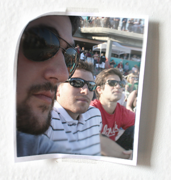

Sean Donnelly grew up in Santa Cruz, California. but has lived in Brooklyn since graduating from NYU's Film and Television program.
Since then, Sean has directed many music videos and commercials for clients such as Scion, VH1, MSN, AOL, Tally Hall, Galactic, Angela McClusky, Ben Jelen, We The Kings and many more. His video for The Spinto band earned him and co-director Jon Watts a nomination for best International video at the 2008 MVPA Awards. Creativity magazine recently named him one of their director's to watch.
You can see more of his work at www.mrseandonnelly.com
Phil Buccellato, born and raised in the NYC area, has been art directing & designing for film and TV ever since graduating from the NYU film program. Most recently, Phil did the production design for several music videos, a documentary feature about musician Arthur Russell, and a Serbian feature film featuring Cyndi Lauper. Additionally he has also worked in the art department for such films as Wes Anderson's, Darjeeling Limited, and Charlie Kaufman's, Synecdoche New York. Phil worked under designer Mark Friedberg on both of these films.
Phil also runs a small multimedia production company based out of NYC, called Greener Media. It is through Greener Media, where Phil works on various documentary projects. This past September 2007, a feature doc that Phil shot for director Jon Fletcher, won best documentary at the Boston Film Festival.
Jordy Cohen, AKA "Breezy Jordy" is originally from Santa Cruz, CA. It is in Santa Cruz where Jordy met Sean Donnelly in 1995. Ever since 8th grade, Jordy and Sean have been collaborating on film projects to this day.
He currently resides in San Francisco where he works at a law firm while DJ'ing on the side.